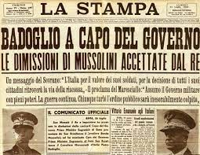
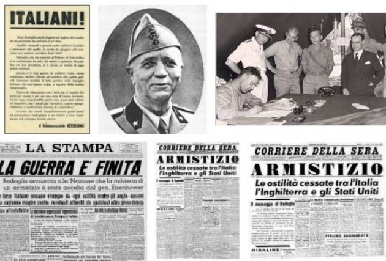

I grandi scioperi del '43
 I segnali di uno scollamento tra Paese e regime era già stati ben visibili a partire dai primi mesi del 1943, quindi ancor prima dello sbarco alleato in Sicilia. Torino e poi le grandi città industriali del Nord Italia, diedero infatti vita, a partire dal marzo 1943, a grandi scioperi. Gli operai e i lavoratori delle fabbriche manifestavano contro il regime, contro la guerra, contro le difficilissime condizioni di vita che erano costretti a subire.
La notte del Gran Consiglio del Fascismo
Determinante però per il crollo del fascismo fu la svolta fondamentale e di natura prettamente politica che si verificò nel luglio del 1943. Nella notte tra il 24 e il 25 luglio ebbe luogo una riunione all’interno di una delle istituzioni più importanti del regime fascista, il Gran Consiglio del Fascismo, l’organo direttivo del governo. In questa sede, venne approvato l’ordine del giorno presentato da Dino Grandi. Questo ordine del giorno stabiliva di: - riaffidare al re Vittorio Emanuele III il comando delle forze armate; - privare il duce delle funzioni e del ruolo di capo del governo.
I sostenitori
Oltre al ministro di giustizia Dino Grandi, tale iniziativa ebbe tra i principali sostenitori Giuseppe Bottai e il genero stesso di Mussolini, il ministro degli Esteri Galeazzo Ciano.
Pietro Badoglio: nuovo capo del governo
Il re Vittorio Emanuele III accettò totalmente ciò che la riunione aveva stabilito e mise subito in atto alcuni provvedimenti. Il re nominò quindi nuovo capo del governo Pietro Badoglio, uno dei più importanti generali dell’esercito italiano, noto per aver concluso nel 1936 l’impresa di Etiopia, evento cardine per la fondazione di quello che fu definito l’impero durante il regime fascista.
Le dimissioni e l’arresto di Mussolini
Nel pomeriggio del 25 luglio Mussolini fu poi convocato dal re e a lui rassegnò le sue dimissioni. Il re, a questo punto, richiese l’intervento dei carabinieri per procedere con l’arresto del duce.
La prigionia di Mussolini a Campo Imperatore
Dopo l’arresto, Mussolini venne poi condotto sulle montagne del Gran Sasso in Abruzzo, dove restò prigioniero a Campo Imperatore fino a che non fu liberato dai paracadutisti nazisti il successivo 12 settembre 1943.
La fine del fascismo
Nella notte tra il 25 e il 26 luglio una notizia trasmessa alla radio sconvolse gli italiani: il fascismo era caduto e Mussolini era stato arrestato. Numerose manifestazioni avvennero nel Paese: la popolazione era convinta che, caduto il fascismo, la guerra fosse terminata.
Tumulti
Gli italiani organizzarono cortei, le sedi del partito nazionale fascista furono prese di mira e gli assalti alle carceri permisero di liberare molti prigionieri politici. I fascisti si diedero alla macchia e non fecero resistenza per opporsi alla fine del regime a cui essi appartenevano. 
L'armistizio di Cassibile
Gli eventi dell’estate del 1943 portarono a drastici cambiamenti che trovano nello sbarco degli alleati prima, nella caduta del fascismo e nell’arresto di Mussolini poi, i loro prodromi. In primo luogo, il nuovo capo del governo Badoglio intese subito riaffermare e rendere noto che la guerra sarebbe continuata. Frattanto, ebbero inizio le trattative segrete che avrebbero portato alla firma dell’armistizio tra il governo italiano e gli alleati. Tale importante atto venne firmato a Cassibile, una località nei pressi di Siracusa, il 3 settembre. Le condizioni di quello che in realtà sarebbe stato un atto di resa dell’Italia nei confronti delle potenze inglesi e americane vennero rese pubblicamente note solo alcuni giorni dopo, l’8 settembre.